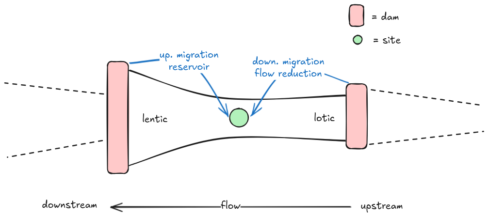

library(renv)
renv::load()
renv::restore() # Install missing librairies.
renv::status() # Check the project state.
library(targets)
library(here)
tar_config_set(
store = here::here("_targets")
)
library(tidyr)
library(dplyr)
library(ggplot2)
theme_set(theme_minimal())Define the statistical model
Summary
This notebook contains
- the reasonning underlying the model definition that we intend to use in our study
- the list of causal relationships that we assume, illustrated with a DAG
- ecological interpretations relating these causal relationships to ecological processes.
1. Write the DAG
1.1. Causal dependence and check for bias
First, let’s think about the causal relationship between our covariables and the metric we want to predict, that is, food web structure. For now, we will forget about details of how to capture best dam impact with summary metrics. Instead, we focus here on the overall causal relationships among our variables. Directed Acyclic Graph are a common and graphical way to write the causal relationships assumed between the set of variables of interest.
To begin with, we consider the following general relationships, where environmental variables are aggregated within a single node (“Env.”), these includes: water temperature, nutrient concentrations, salinity, etc.
plot_dag <- tar_read(plot_dag)
plot_dag
Environmental variables can have an impact on species richness (e.g. nutrients overload can simplify community due to turbidifcation), species composition (e.g. some species may not be suited for a given set of environmental conditions), and directly food web structure (here “C”, which can be for example connectance)by affecting species behaviour, density or size. Moreover, we also assume that richness and composition jointly shape food web structure.
We see that we have 3 paths from environmental drivers and food web structure. Two of them are mediated by an intermediate variables, respectively composition and richness. However, as we are not observing species comosition we cannot disantengly between these two paths: Env. -> C and Env. -> Comp. -> C. That said, we can still interpret the direct effect Env. -> C in our model, as a total effect.
In brief, species composition is treated as a latent variable. As a result, estimated environmental effects on food-web structure should be interpreted as total effects or as effects conditional on species richness, but not as fully direct effects
1.2. Write a first model
Now that we have ensure that our model doesn’t include statistical bias, we can write down the statistical model. We will also try to think about the environmental variables that we want to include. Let’s do our list of environmental variables:
- temperature
- nutrient proxy (e.g. BOD)
- distance to the river mouth
For simplicity, we assume no interactions between our environmental variables (for now).
We also let for later the random effects.
1.2.1. Model food web connectance
If we are interested in connectance, we write the following model
\[ C_i \sim \text{Beta}(\mu_i \phi, (1 - \mu_i) \phi_i), \]
where we use a beta distribution of mean \(\mu_i\) and precision \(\phi_i\), and a logit link function to ensure that connectance values are bounded between 0 and 1. Further, the mean of the distribution is given by
\[ \text{logit}(\mu_i) = \beta_0 + \beta_T T_i + \beta_N N_i + \beta_D D_i, \]
where weakly informative prior have to be selected for regularization.
1.2.2. Model trophic length
Because trophic length is unbounded we can simply use a gaussian distribution and no link function.
\[ \text{TL}_i \sim \text{Normal}(\mu_i, \sigma_i), \]
with the mean given by
\[ \mu_i = \beta_0 + \beta_T T_i + \beta_N N_i + \beta_D D_i. \]
2. Capture dam impacts
Next, let’s focus on how to best capture dam impact. We begin with an illustration of how dams can impact a given community at a local scale in Figure 1.

A dam can impact a local community varied ways. First, depending on whether it is upstream or downstream compared to the site of interest. A dam downstream can create a reservoir, transitionning the system from lotic to lentic. It can also prevent fish from migrating upstream. A dam upstream can interrupt the river flow, change the sedimentation, and overall the hydrogeomorpholical conditions of the system. It can also prevent migration of fish downstream (although we can expect this effect to be weaker than for the upstream migration).
Furthermore, dams can act at different scale. There is an obvious local effect of dams, but dams can also have an effect at larger scale (‘heritage’). For example, crossing a dam is harder if the fish had to already cross few dams before. That said, we still can assume that the closest the dam is from a site, the stronger its impact is.
2.1. Design metrics
To summarise, we want metrics to capture an upstream and downstream impact of dams, as well as, the scale these impacts operate.
One way to do so, is to design two metrics - one upstream, one downstream - and incorporate the scale within these metrics (fixed for a given model). Then, we can vary these scale, and assess the scale of dam impacts by comparing model performances (e.g. WAIC).
2.1.1. Impact of dam upstream
Here, we assume the impact of dams is proportional to their height (\(h_i\)). So we want to weight dams impact by their height (\(w(h_i)\)), as well as accounting for their distance to the site (\(d_i\)). Here is the first metric we can think of
\[ \text{Dam}_\text{up} = \sum_i w(h_i) e^{-\frac{d_i}{L}}, \]
where \(w(h_i)\) is the scaled dam height (e.g. dam height divided by mean dam height). \(L\) captures the distance at which dam impacts operate. If \(L\) is small only dams close to the site are assumed to have an impact. On te contrary, if \(L\) is large, even far dams can have an impact on the site.
Our idea is to try different \(L\), such as, 10km, 50km, 100km. Then, we compare model performances, and from that we can infer the scale of dam impacts.
2.1.2. Impact of dam downstream
For downstream dam impact, we could use the very same measure, but instead of summing on dam upstream we could sum on downstream dams. However, because we assume that one of the main effect of downstream dams is their reservoir effect we can also use their reservoir volume (\(v_i\))
\[ \text{Dam}_\text{down} = \sum_i w(v_i) e^{-\frac{d_i}{L}}. \]
3. Finalise the model
3.1. Interactions between covariables
First, let’s discuss the potential interactions between our covariables that we want to include in our model. Because interactions are hard to interpret and identify, we want to be as conservative as possible. The probably most important interactions to include is between nutrient concentrations and \(\text{Dam}_\text{down}\) and \(\text{Dam}_\text{up}\). That is because, a downstream dam can increase nutrient impact by preventing water from flowing. Secondly, an upstream dam can mitigate the impact of nutrient overload by blocking the flux.
Note
These interactions are to be discussed dependending on the scale at which nutrients concentration is measured. If it is very local (measured exactly at the site), there are probably no interaction to consider. However, if the measure is an undirect average around the area of the site, interactions may be relevant.
We also consider interactions between dam impact and position in the river-sea continuum. This interaction will allow us to learn about how dam impacts propagate throughout the bassin.
Lastly, we consider a potential interaction between nutrients and temperature. For example, with increased temperature the metabolic demand of fish increases which could magnify nutrient impacts.
3.2. Add random effects
3.2.1. Temporal
We expect food web to be correlated in my time. Because of legacy effects, species present one year have a higher chance of being present the next year. This kind of temporal autocorrelation can be captured by AR model.
Note
The temporal effect sould in any case be compared with and independent random effect.
3.2.2. Spatial
For the spatial random effect, we want to account for the fact that site closer to each other looks more alike. This can be use using the BYM model in INLA, in which we specify which sites are dependent under the form of an adjacency matrix. An alternative, that can also be model on top, is to use euclidian distance with the “SPDE” method.
3.2.3. Measurement
Lastly, we have to add random effects to correct for potential differences between campagne. Notably, not all compagne use the fishing techniques.
3.3. Write the final model
Using everything we have built until there, we can build a first draft of our model.
3.3.1. Food web connectance
For connectance, the model writes
\[ C_i \sim \text{Beta}(\mu_i\phi_i, (1 - \mu_i)\phi_i) \]
where the mean is given by
\[ \begin{align} \text{logit} (\mu_i) = &\beta_0 + \beta_1 T_i + \beta_2 N_i + \beta_3 D_i + \beta_4 \text{Dam}_\text{up} + \beta_5 \text{Dam}_\text{down} + &\text{[fixed effects]} \\ &\beta_6 (\text{Dam}_\text{up} \times N_i) + \beta_7 (\text{Dam}_\text{down} \times N_i) + \beta_8 (T_i \times N_i) + &\text{[interactions]} \\ &\beta_9 (\text{Dam}_\text{up} \times D_i) + \beta_{10} (\text{Dam}_\text{down} \times D_i) + &\text{[interactions]} \\ &\text{AR}(1) + u_i + v_i + \text{Campagne}_i. &\text{[random effects]} \end{align} \]
where \(u_i\) is the spatial structured effect, and \(v_i\) the unstructured one.
Note
We begin by assuming that \(\phi_i\) is constant and do not dependend on other variables, for sake of simplicity.
3.4. Ecological interpretation of the model coefficients
| Coefficient | Ecological driver | Hypothesis / mechanism | Expected effect | References |
|---|---|---|---|---|
| \(\beta_0\) | — | Baseline food web structure when environmental covariates are at their reference values | — | |
| \(\beta_1\) | Temperature | Warming alters metabolic rates, sizes and species composition | ||
| \(\beta_2\) | Nutrients | Nutrient enrichment increases productivity and may simplify food webs through eutrophication and dominance of opportunistic species | + C / - TL | |
| \(\beta_3\) | Distance to river mouth | Food web structure varies along the river–sea continuum due to changes in productivity, species richness, and habitat conditions | + | |
| \(\beta_4\) | Upstream dam impact | Dams alter hydrology, connectivity for migratory species, and material fluxes | − | |
| \(\beta_5\) | Downstream dam impact | Lotic to lentic, connectivity for migratory species, and material fluxes | − | |
| \(\beta_6\), \(\beta_7\) | Dam impact x nutrient | Dam effects interact with nutrient concentration: at a local scale by modifying the hydrological conditions (e.g. reservoir), or a global scale by smoothing nutrient pulses | context-dependent | |
| \(\beta_8\) | Temperature x nutrient | Warming and nutrients both impact productivity, and metabolic demand, potentially reshaping how energy flows within the community | context-dependent | |
| \(\beta_9\), \(\beta_{10}\) | Dam impact x continuum | Dam impact may differ within the river-sea continnum | context-dependent |
Important
Add references.
3.5. Check beta distribution behaviour
Finally, we want to check that the beta distribution is suited to capture the empirical distribution of food web connectance. We expect the connectance values to be concentrated around 0.2, and to do not go beyond 0.4. Let’s see for what parameters of the beta distribution we can generate such shapes.
mu <- 0.2
phi_vals <- c(20, 40, 60, 80)
x <- seq(0, 1, length = 1000)
df <- expand_grid(
x = x,
phi = phi_vals
) |> mutate(
alpha = mu * phi,
beta = (1 - mu) * phi,
density = dbeta(x, alpha, beta)
)
ggplot(df, aes(x = x, y = density, colour = factor(phi))) +
geom_line() +
labs(x = "Connectance", y = "Density", colour = expression(phi))
We see that the beta distribution can surely capture the emprical distribution food web connectance. Later, we will have to find good priors to ensure that explore plausible distributions.